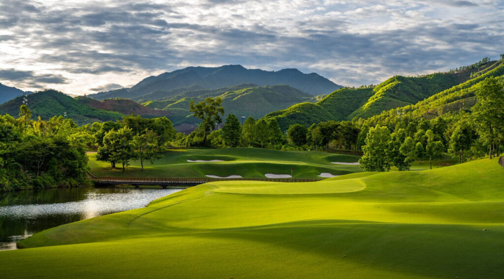

On the fairway
Build in golf naturally
Championship courses can sit comfortably around meetings, resort time or a private holiday.

Da Nang & Hoi An
Beachfront resorts, championship golf and the lantern-lit streets of Hoi An — one of Vietnam’s most versatile regions.
Begin your journey →Central Vietnam
Da Nang and Hoi An work beautifully together: smooth airport access and modern resorts on one side, heritage streets, local dining and slower evenings on the other.
The Pacific World approach
We connect hotels, golf, private transport and Hoi An experiences into one programme so the region feels effortless rather than fragmented.

Championship courses can sit comfortably around meetings, resort time or a private holiday.
Private dining and evening walks bring a softer rhythm after the working day.

Add heritage and imperial history without changing travel partners.
“Central Vietnam is at its best when the programme leaves room for both the coast and the old town.”
Curated journeys
Each programme is adjusted around your dates, travellers, preferred stay style and wider Vietnam itinerary.
Airport arrival, premium hotel, private transport and responsive local support.
Explore journey ↗Meetings and client time paired with a curated golf day.
Explore journey ↗Work sessions, local experiences and genuine downtime in one balanced programme.
Explore journey ↗You may also like
Add heritage, golf, a quieter resort stay or continue south along the coast.
Why visit Da Nang & Hoi An
Da Nang offers excellent air access, modern hotels and coastal resorts, while nearby Hoi An adds heritage, dining and a more intimate evening atmosphere.
The region is especially strong for programmes that need variety without complicated transfers — meetings, golf, beach time and local experiences can all sit within the same stay.
It also connects naturally with Hue to the north and resort destinations further south.
Good to know
It depends on the programme. Da Nang is convenient for airport access, resorts and golf, while Hoi An offers a more atmospheric heritage setting. Many journeys combine both.
Yes. The central coast has several well-known golf courses and works especially well for golf holidays and corporate golf days.
They are close enough to combine comfortably within one itinerary using private transport.
Yes. Hue is a natural cultural extension and can be added by private road transfer.
Tailored for you
We will connect the hotel, transport, golf and local experiences into one seamless stay.
Start planning →